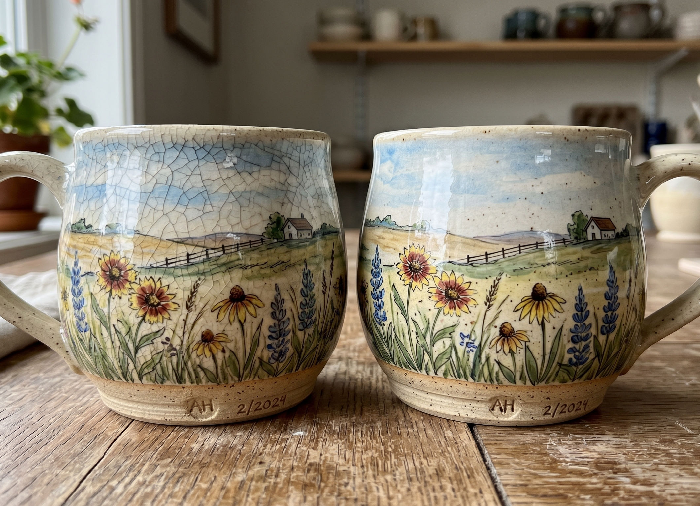
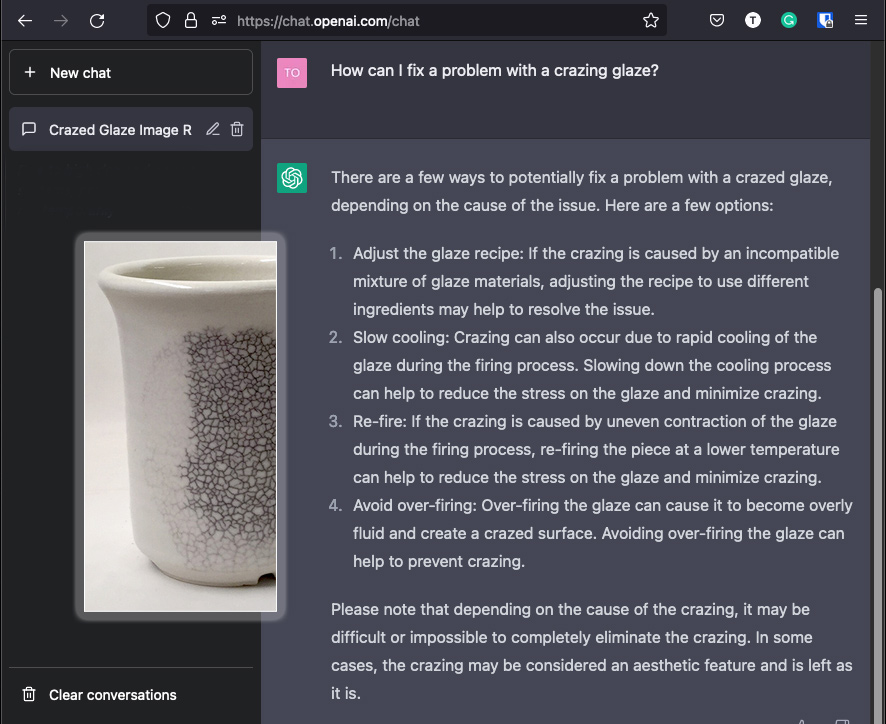

Glaze Crazing
Crazed ceramic glazes have a network of cracks. Understanding the causes is the most practical way to solve it. 95% of the time the solution is to adjust the thermal expansion of the glaze.
Key phrases linking here: glaze crazing - Learn more
Details
Crazing is the opposite of shivering. It is a mismatch of thermal expansions between body and glaze (where that of the latter is higher). Glaze thermal expansion is a product of the chemistry (provided a glaze is completely melted). By far the most appropriate method to adjust expansion is to reduce the amount of high-expansion oxides (like sodium and potassium) and replace them with similar functioning oxides of lower thermal expansion (using glaze chemistry).
The principal home of information on this issue is in the troubleshooting section in the Crazing topic. Here we will concentrate on recognizing it and avoiding bad advice on dealing with it.
This page mostly assumes you can make your own glazes or are willing to question and assess the fit of commercial ones. Don't assume it is too hard to make a transparent glaze to fit your clay body. Or that it is too difficult to make a brushing glaze. Starting with a good base recipe that fits your clay body puts you ahead of any commercial product.
Bad advice on reducing crazing in stoneware glazes: These are from two popular pages (links below), pretty well every suggestion will not work! These are most treat-the-symptoms approaches but the bottom line is: If there is a thermal expansion mismatch between body and glaze it will reveal itself sooner or later no matter how you adjust firing or glaze thickness to hide the problem. ChatBots regurgitate the following wrong information - so it must appear internet-wide.
-Crazing can be corrected by adding materials with low expansion such as boron or reducing any high expansion materials such as feldspar (wrong, you need to trade oxides, not materials that source them - oxides of high expansion for those of low expansion - feldspar is a complex material, it also sources the most important oxides, SiO2 and Al2O3, these are lost when reducing it).
-Low expansion materials such as borate frit, silica, clay, or talc can be added a few percent at a time to a series of glaze tests (wrong, the most common borate frit, 3134, is very high expansion, the only low expansion common frit is 3249 but it will affect colors and surface character; adding silica only dilutes the KNaO, this only ever works for delayed crazing in gloss glazes melting well enough to tolerate an addition of a refractory powder; clays add SiO2 and Al2O3 so adding them only works if the glaze is short on both and over-melting anyway; adding talc will most often matt the glaze, or, if it is already matte, over-matte it).
-It is better to change one material at a time when trying to correct crazing (wrong, it is almost always best to change two oxides at a time, trading one for another; otherwise add or remove one oxide that is under or oversupplied).
-Increase the silica in the body (that only works if the body is silica-short otherwise it will cost maturity which will increase crazing, otherwise it will reduce maturity and increase crazing).
-Decrease the feldspar, in body or glaze (decreasing feldspar in a stoneware that needs it for maturity will increase crazing, decreasing it in a glaze that almost certainly needs it for melting will render it completely unsuitable).
-Decrease any other material containing sodium or potassium (same problem as reducing feldspar, but worse if the KNaO is more concentrated).
-Increase the boron (there is no useable source of pure B2O3 so you have to add a frit, sourcing enough boron from it will certainly over-melt the glaze or introduce many other oxides that will affect surface character).
-Increase the alumina, i.e. the clay content (clay sources twice as much SiO2 as Al2O3, the only case under which this will work is if the glaze happens to be short on both and their ratio is the same as in the clay).
-Increase lead oxide (no one in their right mind would put pure lead oxide into a glaze, why would any respectable website maintain a page that says this?).
These have in common approaching this problem on the material level, which is mostly wrong, it is a chemistry level issue.
Delayed Crazing: Ware that appears to be OK out-of-the-kiln can later craze. This happens on repeated exposures to sudden cooling during use (e.g. contact with the cold liquids). Ceramics do not perform well under tension, each time the glaze is suddenly stretched, by its thermal contraction on the unyielding body, its bond with the body can be affected. The situation is aggravated when ware is thick because the underlying body adjusts to the temperature change even more slowly. To stress-test your ware use the IWCT test. Any functional ware, from terra cotta to translucent porcelain, should survive this without crazing or shivering.
Crazing is often not easily visible when a glaze is colored or variegated, thus it is wise to use a heavy black marker pen (and then clean it off with methyl hydrate or other solvent) to reveal it. This has the additional benefit of revealing problems with glaze staining (these surfaces are difficult or impossible to clean).
Crazing can also occur in glazes on low-fire ware when the body absorbs water and expands. To avoid this it is best to leave a minimum of unglazed body surface and plug that with silicone sealant. Body formulations also often include calcium carbonate which is said to help prevent this phenomenon.
Related Information
This is crazing. On functional ware. Not good.
 AI generated with the prompt: A crazed glaze on a stoneware pottery mug.
AI generated with the prompt: A crazed glaze on a stoneware pottery mug.This picture has its own page with more detail, click here to see it.
This glaze is "stretched" on the clay so it cracks. When the lines are close together like this it is more serious. If the effect is intended, it is called "crackle" (but no one should intend this on functional ware). Potters, hobbyists and artists invariably bump into this issue whether using commercial glazes or making their own.
"Art language" solutions don't work, at least some technical words are needed to understand it. Crazing is a mismatch in the thermal expansions of glaze and body. Most ceramics expand slightly on heating and contract on cooling. The amount of change is very small, but ceramics are brittle and glazes are rigidly attached. If they are stretched on the ware cracks will occur to relieve the stress (usually during cooling in the firing but sometimes much later). All glaze and body manufacturers advise against crazing on functional ware.
Incorrect craze-fixing advice is still common online:
Well demonstrated using an AI-generated photo!

Gemini generated image showing state of the art in May 2026. The prompt was "Two pottery mugs, one is crazed. Both are made by the same potter and are the same shape and size. Both have a transparent glaze and underglaze prairie motif brushwork."This picture has its own page with more detail, click here to see it.
Crazing is one of the most common glaze defects. AI image generators can produce this really convincing photo, but AI explanations often still recycle oversimplified glaze-fit advice from the web. Let's work in reverse to see why using this speckled stoneware, it has lots of ball clay and quartz, it is easy to fit glazes to. What would it take to craze the glaze on the right? A lot. Glazes that craze out of the kiln on quartz-rich bodies are not "slightly misfit"; they are "hugely misfit". Under or over-firing, or holding less time at temperature, would not be enough to craze it. Reducing the silica enough to start severe crazing like this would fundamentally alter the glaze character and functionality.
This is not a recipe-level problem (e.g. reducing feldspar for silica or zinc). This is a material problem; it is an oxide chemistry issue. By far the best way to put the glaze under tension, to craze it, is to trade low thermal expansion oxides (not materials) for high ones. In this case, shift some of the flux unity away from CaO/MgO and toward KNaO (the latter being the highest thermal expansion oxides, by far).
All are fluxes and this is a transparent, so minimal change it character should occur.
ChatGPT was completely wrong about the cause of glaze crazing in 2023!

This picture has its own page with more detail, click here to see it.
ChatGPT was parroting common wrong suggestions about the cause and solution of the serious issue of crazing. Yet it trained on thousands of internet pages about the subject! Crazed functional ware is defective, and customers will return it. So fixing the problem is serious business, we need correct answers. Consider its suggestions: #1 is wrong. There is no such thing as an "incompatible mix" of ceramic materials. Crazing is an incompatibility in thermal expansions of glaze and body, almost always a result of excessive levels of high-expansion K2O and Na2O in the chemistry of the glaze. The solution is reducing them in favor of other fluxes (the amount per the degree of COE mismatch). #2 is wrong, firing changes don't fix the incompatibility of thermal expansions. #3 is wrong, refiring makes the crazing go away but not the stress of the mismatch, it will for sure return. #4 is completely wrong. Firing higher takes more quartz grains into solution in the melt and should reduce the COE (and mature the body more which often improves fit). And melt fluidity has nothing to do with crazing. Furthermore, if a glaze does not run off the ware, it is not overfired. Of course, this is the worst it will ever be, expect better in future.
No crazing out of the kiln. But an ice-water test did this.

This picture has its own page with more detail, click here to see it.
The side of this white porcelain test mug is glazed with varying thicknesses of V.C. 71 (a popular silky matte used by potters), then fired to cone 6. Out of the kiln, there was no crazing, and it felt silky and wonderful. But after a 300F/icewater IWCT this happened (it was felt-pen marked and cleaned with acetone). The glaze was apparently elastic enough to handle the gradual cooling in the kiln. However, the recipe has 40% feldspar and low Al2O3 and SiO2, in a cone 6 glaze these are red flags for crazing.
No matter what anyone tells you, glaze fit can rarely be fixed by firing differently (that just delays it). If someone needs to cool their kiln slowly to prevent crazing it simply means the glaze does not fit - its needs to be adjusted to reduce its co-efficient of thermal expansion.
Turning delayed crazing into immediate crazing

This picture has its own page with more detail, click here to see it.
This is a cone 04 clay (Plainsman Buffstone) with a transparent glaze (G1916Q which is 65% Frit 3195, 20% Frit 3110, 15% EPK). On coming out of the kiln, the glaze looked fine, crystal clear, no crazing. However, when heated to 300F and then immersed into ice water this happens. This is the IWCT test. At lower temperatures, where bodies are porous, water immediately penetrates the cracks and begins to waterlog the body below. Fixing the problem was easy: Substitute the low expansion Frit 3249 for high expansion Frit 3110.
Inbound Photo Links
|
Two ChatBots square off on crazing in 2025 |
Links
| Troubles |
Glaze Crazing
Ask the right questions to analyse the real cause of glaze crazing. Do not just treat the symptoms, the real cause is thermal expansion mismatch with the body. |
| Glossary |
Glaze shivering
Shivering is a ceramic glaze defect that results in tiny flakes of glaze peeling off edges of ceramic ware. It happens because the thermal expansion of the body is too much higher than the glaze. |
| Glossary |
Crackle glaze
Crackle glazes have a crack pattern that is a product of thermal expansion mismatch between body and glaze. They are not suitable on functional ware. |
| Glossary |
Glaze Compression
In ceramics, glazes are under compression when they have a lower thermal expansion than the body. A little compression strengthens ware, too much can weaken and even fracture it. |
| Glossary |
Glaze fit
In ceramics, glaze fit refers to the thermal expansion compatibility between glaze and clay body. When the fit is not good the glaze forms a crack pattern or flakes off on contours. |
| Glossary |
Feldspar Glazes
Feldspar is a natural mineral that, by itself, is the most similar to a high temperature stoneware glaze. Thus it is common to see alot of it in glaze recipes. Actually, too much. |
| Glossary |
Thermal shock
When sudden changes in temperature cause dimensional changes ceramics often fail because of their brittle nature. Yet some ceramics are highly resistant. |
| Articles |
Is Your Fired Ware Safe?
Glazed ware can be a safety hazard to end users because it may leach metals into food and drink, it could harbor bacteria and it could flake of in knife-edged pieces. |
| URLs |
https://www.eieinstruments.com/tiles_&_ceramics_testing_instruments/autoclave_test/tiles-autoclave-crazing-test-autoclave-for-website
Tiles Autoclave - Crazing Test Autoclave Compliance Standards: EN ISO 10545-11, ASTM C424, IS 13630 (Part-9) |
| URLs |
https://ceramicartsnetwork.org/daily/article/common-glaze-faults-and-how-to-correct-them
Common Glaze Faults and How to Correct Them - Five wrong answers (from Dec 2023) |
| URLs |
https://ceramicartsnetwork.org/daily/article/How-to-Correct-Five-Common-Ceramic-Glaze-Defects
How to Correct Five Common Ceramic Glaze Defects - Five wrong answers recycled from the book "Ceramic Spectrum". |
 PayPal | No tracking, No ads, No paywall, No transient content! Just organized, concise information constantly updated and improved. Was this helpful? Consider supporting me. |
| By Tony Hansen Follow me on        |  |
Got a Question?
Buy me a coffee and we can talk 

https://digitalfire.com, All Rights Reserved
Privacy Policy